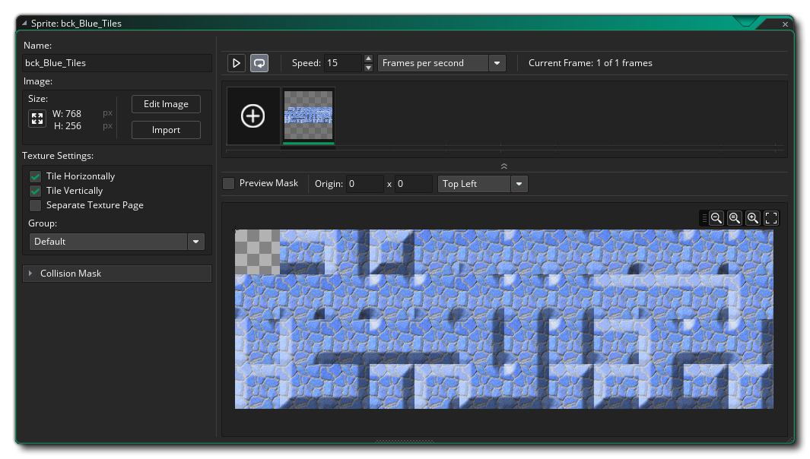
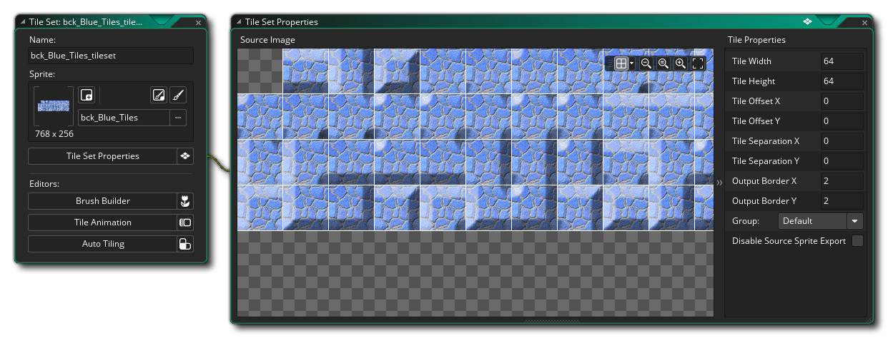
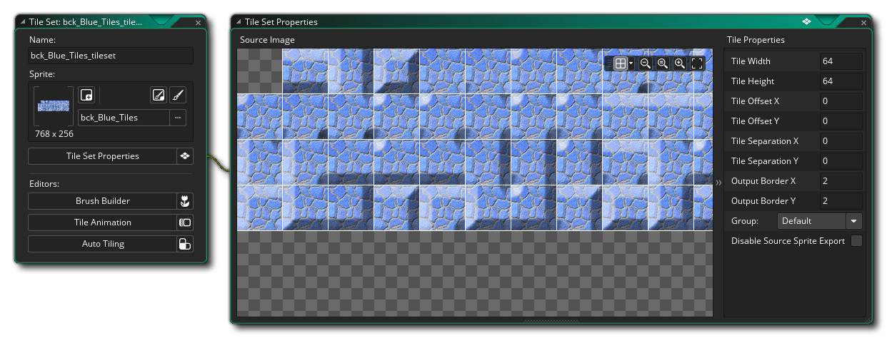

Los Conjuntos de mosaicos se crean a partir de sprites, pero también se clasifican como recursos independientes, ya que la forma en que GameMaker Studio 2 los maneja es un poco diferente tanto para los objetos como para los objetos. Básicamente, un mosaico es simplemente un recurso gráfico que se dibuja en la pantalla con muy poca sobrecarga de CPU / GPU, lo que los hace ideales para diseñar elementos estáticos en niveles, y un conjunto de mosaicos es una colección de mosaicos creados en un solo sprite. Los mosaicos solo pueden ser rectangulares o cuadrados (si quieres algo más que esto, entonces necesitarás crear un sprite regular y usar la Capa de Activos en el editor de la sala, del cual hablaremos más adelante). En esta guía de inicio rápido, veremos un conjunto de mosaicos para hacer paredes en un juego de arriba hacia abajo.
Para empezar, necesitamos tener una imagen de conjunto de mosaicos, que se haría en el editor de imágenes / editor de sprites, y el sprite final se vería así: 
Observe que el primer mosaico está en blanco en esa imagen. La forma en que el mapa de azulejos de la sala se almacena en GameMaker Studio 2 significa que el mosaico (0) siempre tendrá que estar en blanco, ya que es esencialmente el mosaico "eliminar" o el mosaico de "espacio vacío". Por lo tanto, al crear sus mapas, el mosaico de la esquina superior izquierda siempre tendrá que estar vacío de esta manera. También tenga en cuenta que, si bien la imagen de arriba muestra un juego de fichas de pared completo con 47 fichas, es posible que no necesite tantas como pueda rotar y voltear las fichas al colocarlas en el editor de sala más adelante.
Con un sprite creado, podemos seguir adelante y definir el conjunto de mosaicos, lo que significa que primero tiene que crear un nuevo recurso de conjunto de mosaicos haciendo clic con el botón derecho.  la carpeta de recursos del conjunto de mosaicos y seleccionando Crear. Esto abrirá el Editor de conjuntos de mosaicos donde podrá agregar el elemento y establecer sus propiedades: 
la carpeta de recursos del conjunto de mosaicos y seleccionando Crear. Esto abrirá el Editor de conjuntos de mosaicos donde podrá agregar el elemento y establecer sus propiedades: 
Hemos establecido el tamaño del conjunto de mosaicos en 32px, y hemos dejado el resto de los valores en su valor predeterminado, ya que no necesitamos compensaciones ni nada de eso. Ahora puede cerrar el editor de conjunto de mosaicos, ya que puede usar el conjunto de mosaicos "tal cual" para crear capas de mosaico en el editor de sala. Si desea obtener más información sobre las funciones avanzadas del Editor de conjuntos de mosaicos, consulte la sección correspondiente del manual. Ahora, pase a crear efectos de sonido para su proyecto...